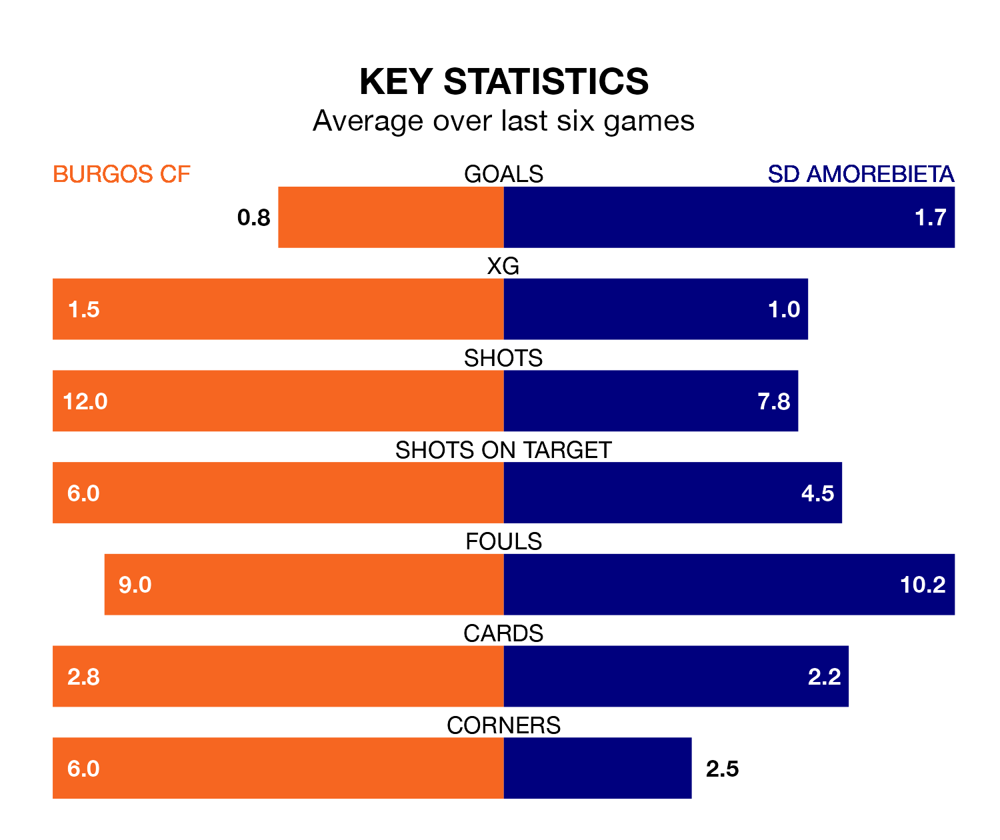

SD Amorebieta travel to Burgos CF on Saturday in the Segunda División.
The visitors come into the game on the back of a defeat in their last match, having lost to Real Valladolid 3-0 at home.
Burgos also lost their last match, 2-1 against Mirandés, with their goal scored by Anderson Arroyo Córdoba.
Amorebieta are 20th in the table after 36 games, of which they have won nine and drawn 10, earning 37 points.
Burgos are 10 places ahead of the away team in 10th, with 15 wins and eight draws putting them on 53 points.
With 32 goals in 36 games so far this season, Amorebieta are scoring at below the league average rate with 0.9 goals per game. And they are conceding more than average, letting in 45 goals at a rate of 1.2 per game.
The hosts, meanwhile, are above average scorers, with 1.2 goals per game, compared to a league average of 1.1. They have conceded 1.3 goals per game.
In the last 10 years, Burgos and Amorebieta have played each other on six occasions. Burgos won one of them, Amorebieta two, and they drew three times.
On average, Burgos scored 1.0 goal and Amorebieta 1.2 in those matches.
Their last meeting was on December 3, when Burgos won 1-0 away.
With José Antonio Caro Díaz between the sticks, Burgos can rely on one of the league's safest pair of hands. He has kept 14 clean sheets in his 36 appearances this season, and only two other 'keepers – Leganés's Diego Conde and SD Huesca's Álvaro Fernández – have been able to prevent the opposition scoring on more occasions in the Segunda División.
In Amorebieta's net, Pablo Cuñat Campos has seven clean sheets in 26 games.
Burgos are in disappointing form in the Segunda División, with one win and two draws from their last six games.
With four wins and a draw over that period, the visitors' form is much better – they have taken 13 points from 18, compared to the home side's five.
Updated: 07:59 (UTC), 26/04/24